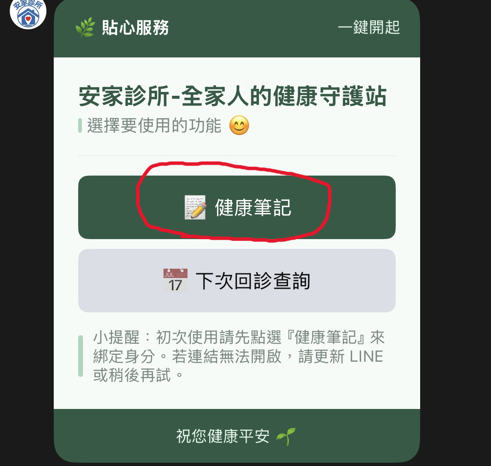
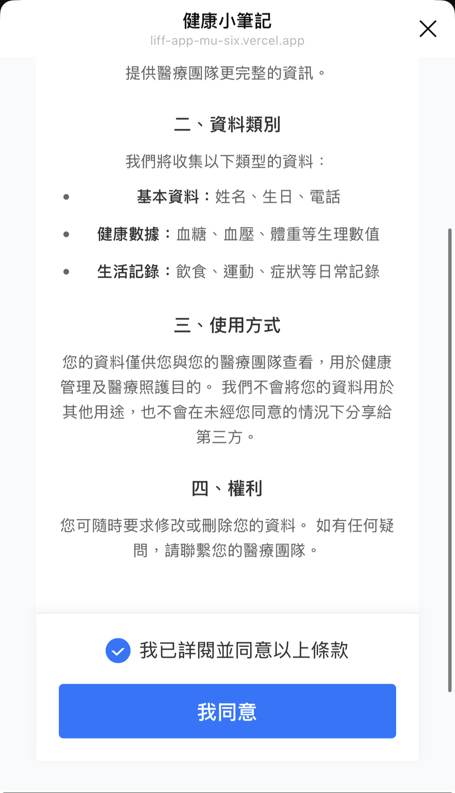
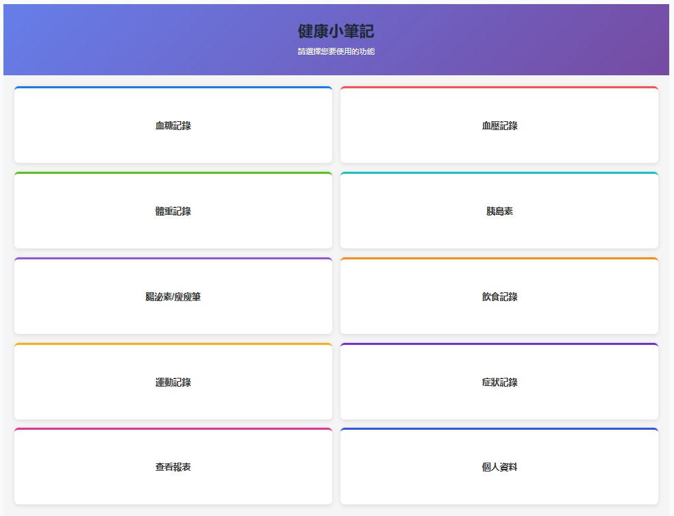
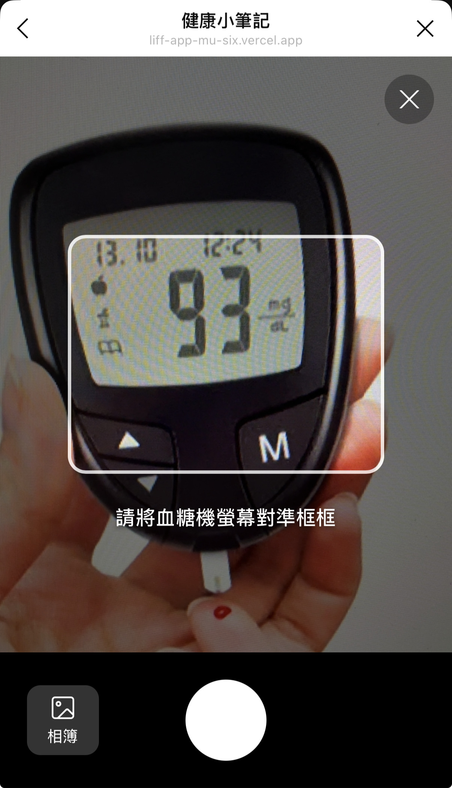
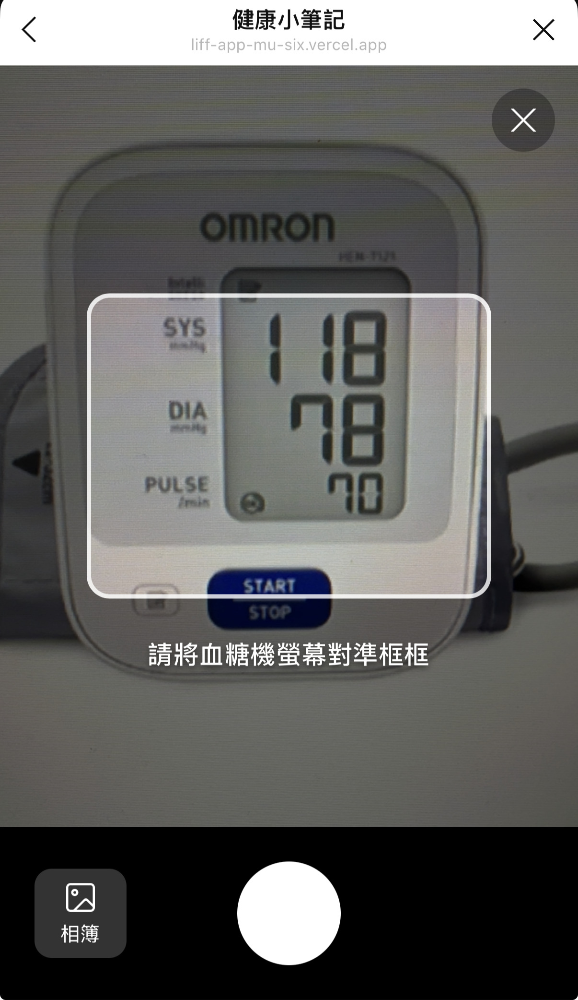
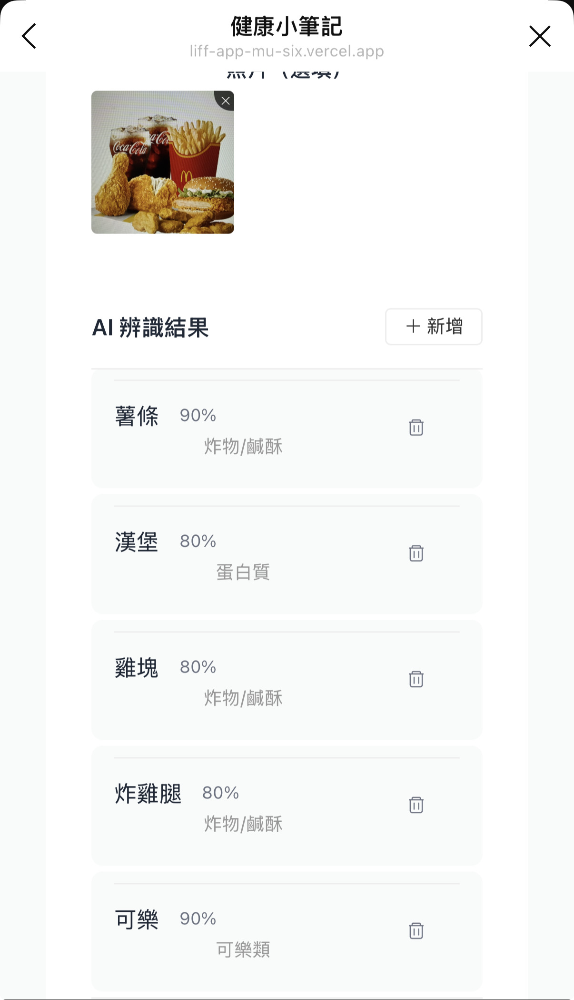
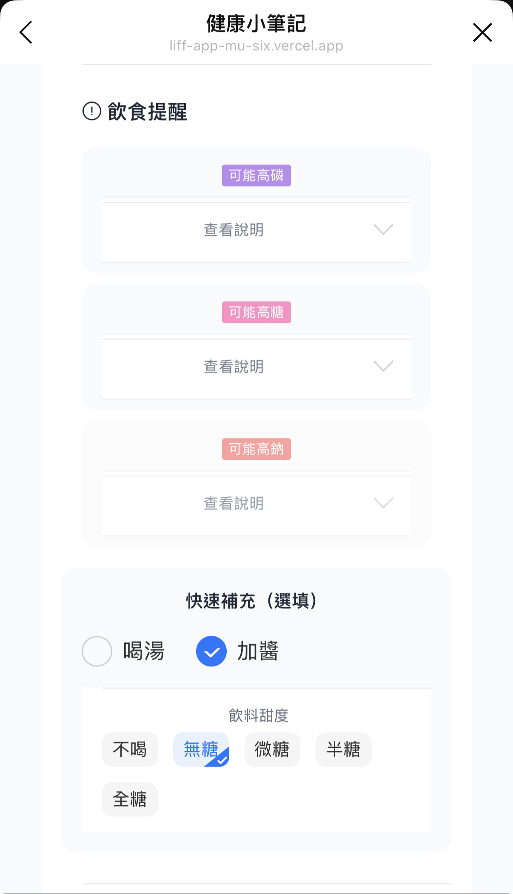
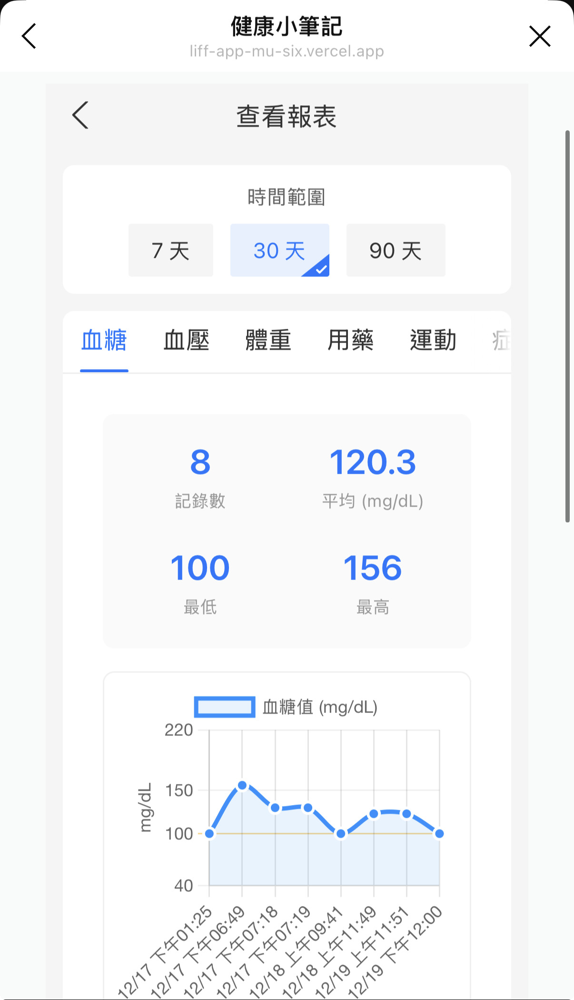

健康小筆記
專為各種慢性病患者設計的 LINE 健康管理小幫手。
只需打開 LINE，輕鬆記錄，AI 幫您自動辨識。
8 種健康記錄
血糖、血壓、體重、用藥、飲食、運動、症狀、腸泌素
OCR 拍照識別
拍血糖機或血壓計螢幕，數字自動填入
AI 飲食辨識
拍餐點照片，自動辨識食物與風險
健康報表
視覺化圖表，輕鬆查看健康趨勢
快速開始：第一次使用
1
開啟健康小筆記
- 打開您的 LINE App。
- 點選診所提供的好友連結，或掃描 QR Code。
- 畫面會自動跳轉到「健康小筆記」。
官方帳號入口

選單入口
掃描 QR Code
2
同意條款與填寫資料
同意使用條款
- 閱讀內容並勾選 「我已詳閱並同意以上條款」。
- 點選 確認。
最佳做法： 請仔細閱讀條款，了解您的資料隱私權益。
填寫基本資料
- 輸入 姓名、生日、電話。
- 點選 下一步。
請填寫真實資料，方便診所核對身分。

勾選同意後，按「確認」
3
設定完成！
您可以設定用餐時間（或跳過），完成後就會看到主畫面。
功能選單包含：
血糖
血壓
體重
用藥
飲食
運動
症狀
腸泌素

看到這個畫面，代表註冊成功囉！
常見任務
任務一：記錄血糖
推薦
方法 A：拍照輸入
- 點選 血糖記錄 > 拍照輸入。
- 對準螢幕，讓數字清楚顯示在畫面中。
- 點選 拍照，等待 AI 辨識。
- 確認數字無誤後按 確認。
- 選擇 量測時段 並送出。

對準螢幕數字拍照
方法 B：手動輸入
- 點選 血糖記錄。
- 輸入數字（例如 108）。
- 選擇 量測時段（如下表）。
- 送出記錄。
| 時段 | 說明 |
|---|---|
| 早餐前 | 空腹血糖 |
| 飯後 2 小時 | 吃完第一口飯後算起 |
| 睡前 | 睡覺前測量 |
任務二：記錄血壓
同樣支援 拍照輸入！AI 會自動抓取收縮壓、舒張壓和脈搏。
數值說明：
- 收縮壓：上面的大數字
- 舒張壓：下面的小數字
- 脈搏：心跳次數

一次辨識三個數字
任務三：記錄飲食 (AI 辨識)
拍一張照片，AI 自動幫您分析食物內容與潛在風險。
- 點選 飲食記錄 > 拍照。
- 系統列出辨識到的食物。
- 回答簡單問題（是否有喝湯、沾醬等）。
- 查看 風險標籤 (如：高鈉、高糖)。
風險標籤說明
高鈉：加工食品、湯
高鉀：香蕉、深綠蔬菜
高磷：加工肉、乳製品
高糖：甜點、飲料

拍照上傳

辨識結果與標籤
確認上傳完成記錄
任務四：查看健康報表
- 選擇時間範圍：7 天、30 天、90 天。
- 切換分頁查看不同數據（血糖、血壓、體重）。
- 透過趨勢圖了解身體變化。

健康趨勢圖表範例
其他記錄類型
腸泌素/瘦瘦筆
選擇藥物（猛健樂/週纖達）與劑量。成功後可設定 Google 日曆提醒，每週準時施打。
體重記錄
輸入體重（可含小數），長期追蹤體重變化。
補登過去記錄
忘記記錄沒關係！可以調整日期時間，補登 過去 7 天內 的資料。
卡住了怎麼辦？
拍照無法辨識？
請避開螢幕反光，讓數字清晰顯示。如果還是失敗，請直接切換為手動輸入。
記錄記錯了？
記錄送出後無法刪除。請新增一筆正確的記錄，並在備註欄說明「前一筆有誤」即可。
一直顯示「待核對」？
這是正常的，代表診所尚未核對身分。您可以繼續正常使用，記錄不受影響。